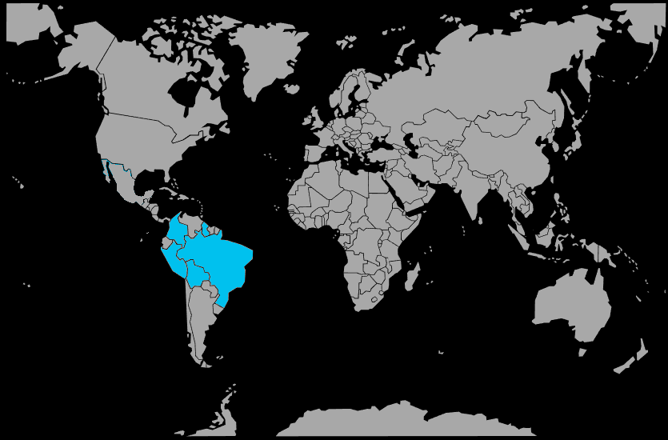

Systématique
- Ordre : Cichliformes
- Famille : Cichlidae
- Sous‑famille : Geophaginae
- Genre : Biotodoma
- Espèce : Biotodoma cupido
Biotodoma cupido est un géophage sud‑américain de taille moyenne, au corps comprimé latéralement et à la robe argentée marquée de bandes verticales sombres et de reflets bleutés.
Les mâles atteignent environ 12 à 15 cm, les femelles restent un peu plus petites, et l'espèce se maintient en petit groupe dans des aquariums spacieux de biotope amazonien.
L'espèce est paisible et grégaire en dehors des périodes de reproduction, vivant en groupes de 5 individus ou plus qui fouillent constamment le substrat à la recherche de nourriture.
En période de frai, les couples deviennent territoriaux et défendent une zone autour du site de ponte; un bac spacieux avec de grandes surfaces au sol et des territoires bien délimités est recommandé.
Mode : pondeur biparental sur substrat découvert; le couple nettoie une pierre plate ou une racine, où la femelle dépose 60 à 120 œufs ensuite gardés par les deux parents.
L'éclosion intervient après 3 à 4 jours, et les alevins sont déplacés dans des fosses creusées dans le sable; les soins parentaux se poursuivent pendant plusieurs semaines, avec une vigilance accrue de la femelle.
Dimorphisme sexuel : peu marqué; les mâles sont légèrement plus grands, avec des nageoires dorsale et anale un peu plus développées, mais le sexage reste difficile hors reproduction.
Espérance de vie : environ 5 à 8 ans en captivité dans de bonnes conditions de maintenance, avec une eau propre et une alimentation variée.
Biotodoma cupido fréquente les zones peu profondes de rivières et affluents amazoniels à courant lent ou nul, avec un substrat sableux ou boueux et de nombreuses racines, branches et feuilles mortes.
Répartition
Origine naturelle :
- Bassin de l'Amazone au Pérou, en Bolivie, en Colombie et au Brésil.
- Bassin de l'Essequibo en Guyane et au Guyana.
- Affluents et zones inondées des grands fleuves amazoniels.
L'espèce est largement distribuée dans le nord de l'Amérique du Sud, dans les réseaux fluviaux amazoniels et guyanais, avec une présence signalée dans de nombreux cours d'eau secondaires et tertiaires.
Paramètres de maintenance
Température : 24 à 28 °C, avec des variations saisonnières possibles entre 20 et 30 °C.
pH : 5,0 à 7,0, eau douce à légèrement acide.
GH : 2 à 10 °dGH, eau douce à moyennement dure.
Courant : faible à modéré, avec une bonne filtration pour éliminer les particules en suspension liées au fouissage.
Volume conseillé : au minimum 300 à 400 L pour un groupe de 5 à 6 individus, avec une grande surface au sol.
Régime alimentaire
Régime : géophage omnivore; il tamise le sable à la recherche de petits invertébrés, larves, détritus organiques et micro‑organismes.
En aquarium, il accepte les granulés coulants, les aliments en flocons, les nourritures congelées (artémias, vers, mysis) et des apports végétaux occasionnels.
Une alimentation variée, distribuée en plusieurs petites rations par jour, favorise le comportement naturel de fouissage et maintient une bonne santé digestive.